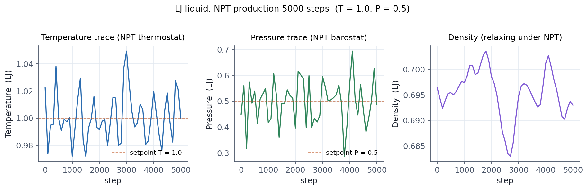

6.1 동역학을 돌리기 위한 마지막 한 묶음
박스, 원자, 힘장이 모두 정의되었다면 시뮬레이션을 시작하기까지 보통 다음 다섯 가지를 더 정합니다.
- 초기 속도 —
velocity - 시간 간격 —
timestep - 이웃 리스트 —
neighbor,neigh_modify - 앙상블 / 제약 —
fix - 실행 —
minimize또는run
이 묶음은 워낙 자주 묶여 다니므로 입력 스크립트의 3·4단계 표준 마무리 라고 봐도 무방합니다.
6.2 velocity — 초기 속도 부여
velocity all create 300.0 12345 mom yes rot yes dist gaussian
all— 속도를 줄 그룹 이름 (group명령으로 정의 가능,all은 기본 제공)create 300.0 12345— 가우시안 분포로 온도 300 K, 시드 12345mom yes— 시스템 전체 운동량을 0으로 보정rot yes— 시스템 전체 각운동량을 0으로 보정 (비주기 시스템에서 권장)dist gaussian— 가우시안 분포 (기본은uniform)
비주기 시스템에서 mom/rot 을 켜지 않으면 시스템 전체가 일정 속도로 흘러가
버립니다(drift). 항상 켜 두는 것을 권장합니다.
6.3 timestep — 적분 시간 간격
timestep 1.0 # units real 의 경우 1 fs
units |
보통 출발점 |
|---|---|
real |
1.0 (fs) |
metal |
0.001 (ps = 1 fs) |
lj |
0.005 (τ) |
물 또는 H 가 있는 시스템에서 1 fs도 길게 느껴지면, 결합을 SHAKE/RATTLE 로 구속하고 timestep을 2 fs로 늘리는 것이 일반적입니다.
fix shake all shake 0.0001 20 0 b 1 a 1
timestep 2.0
6.4 neighbor — 이웃 리스트
neighbor 2.0 bin
neigh_modify every 1 delay 0 check yes
neighbor 2.0 bin— 이웃 리스트의 buffer skin 2.0 (단위계 길이), bin 방식neigh_modify ...— 매 step 마다 체크하고 필요하면 재구성
units lj 에서는 보통 neighbor 0.3 bin, units real / metal 에서는
neighbor 2.0 bin 정도가 안전한 출발점입니다. 잘못 잡으면 "Lost atoms" 또는
"Neighbor list overflow" 오류가 나기 쉽습니다.
6.5 fix — 거의 모든 것을 하는 명령
fix 는 LAMMPS에서 가장 자주 등장하는 명령입니다.
앙상블 적분, 제약 조건, 외력, 측정량 평균, 통계 출력 — 거의 모두 fix로 표현합니다.
기본 형식:
fix ID group-ID style arguments...
가장 자주 쓰는 적분 fix는 다음과 같습니다.
NVE (마이크로캐노니컬)
fix 1 all nve
가장 단순. 에너지 보존이 검증되는 유일한 앙상블이라 처음 시험할 때 자주 씁니다.
NVT (캐노니컬, Nose-Hoover 열욕)
fix 1 all nvt temp 300.0 300.0 100.0
# T_start T_stop T_damp
T_damp 는 보통 timestep × 100 정도가 출발점 (units real 에서 100 fs).
NPT (등압등온)
fix 1 all npt temp 300.0 300.0 100.0 iso 1.0 1.0 1000.0
# ^ ^ ^ ^
# P_axis P_s P_e P_damp
iso 외에 aniso(축별 독립), tri(완전 비등방), x/y/z(축 지정) 등이
가능합니다. P_damp 는 보통 T_damp × 10 정도.
Langevin 온도 욕조 (NVT 대안)
fix 1 all nve
fix 2 all langevin 300.0 300.0 100.0 12345
Langevin은 NVT와 비슷한 효과를 주지만 표면 흡착 또는 거대 분자 시스템에서 Nose-Hoover보다 빠르게 평형으로 끌고 갑니다.
같은 그룹에 동시에 두 개의 적분 fix(예: nve와 nvt)를
걸면 적분이 두 번 이루어져 결과가 망가집니다.
Langevin과 NVE 조합처럼 명시적으로 "적분은 nve가, 온도 제어는 langevin이"
하도록 분리된 경우만 두 fix를 같이 씁니다.
그 외 자주 쓰는 fix
| fix | 역할 |
|---|---|
fix shake |
결합/각도 구속 (긴 timestep용) |
fix wall/lj93 |
LJ 벽 (슬랩 비주기 면) |
fix recenter |
시스템 무게 중심 고정 |
fix momentum |
주기적으로 운동량 0으로 리셋 |
fix print |
시뮬레이션 중 변수를 파일에 출력 |
fix ave/time |
시간 평균 출력 |
fix indent |
점진적 압축(인덴터) |
6.6 minimize — 에너지 최소화
격자에서 만든 시스템이나 데이터 파일에서 막 읽은 시스템은 종종 어떤 원자가
너무 가깝게 놓여 있어 첫 적분에서 폭주합니다. minimize 를 먼저 돌리는 것이
가장 안전합니다.
min_style cg # 또는 sd, fire, hftn
minimize 1.0e-4 1.0e-6 1000 10000
# etol ftol maxiter maxeval
etol— 에너지 수렴 기준 (상대 변화량)ftol— 힘 수렴 기준 (norm)maxiter— 최대 iterationmaxeval— 최대 에너지/힘 평가 횟수
대부분의 경우 cg(conjugate gradient)가 합리적이고, 매우 거친 초기 구조라면
fire 가 안정적입니다.
6.7 run — 적분 실행
run 10000
run 또는 minimize 가 호출되기 전까지의 모든 명령은 단순히 설정만 누적할
뿐 실제 계산은 일어나지 않습니다.
run 명령의 옵션도 알아두면 유용합니다.
run 10000 every 100 "print 'step $step done'" # 매 100 step 후 명령 실행
run 50000 pre no post no # 연속 run의 초기화 생략
run 20000 start 0 stop 100000 # fix nvt 의 T_start~T_stop 보정용
6.8 전형적인 입력 마무리
이 모든 것을 묶으면 보통 입력 스크립트의 끝은 다음과 같은 형태가 됩니다.
# === 시뮬레이션 설정 ===
velocity all create 300.0 12345 mom yes rot yes
timestep 1.0
neighbor 2.0 bin
neigh_modify every 1 delay 0 check yes
# === 단계별 fix ===
min_style cg
minimize 1.0e-4 1.0e-6 1000 10000
fix 1 all nvt temp 300.0 300.0 100.0
thermo 1000
run 50000 # 평형화
unfix 1
fix 1 all npt temp 300.0 300.0 100.0 iso 1.0 1.0 1000.0
run 200000 # 생성 시뮬레이션
이 순서가 거의 모든 입문 예제에 들어맞는 표준 구성입니다.
실제로 돌려본 결과 — LJ 액체의 NPT 안정성
본 가이드의 검증을 위해 위 패턴을 LJ 액체에 적용해 실제로 돌려보았습니다. 8 × 8 × 8 격자(fcc 0.8442, 원자 2048개)를 최소화 → NVT (T = 1.0, 2000 step) → NPT (T = 1.0, P = 0.5, 3000 step) → production (NPT, 5000 step) 흐름으로, LAMMPS 29 Aug 2024 직렬 빌드에서 약 7초 만에 완료됐습니다.
# in.demo (요약) — 위 패턴의 LJ 버전, 실제 실행된 입력
units lj
atom_style atomic
lattice fcc 0.8442
region box block 0 8 0 8 0 8
create_box 1 box
create_atoms 1 box
mass 1 1.0
pair_style lj/cut 2.5
pair_coeff 1 1 1.0 1.0 2.5
velocity all create 1.0 12345 mom yes rot yes dist gaussian
neighbor 0.3 bin
neigh_modify every 20 delay 0 check no
min_style cg
minimize 1.0e-4 1.0e-6 1000 10000
fix 1 all nvt temp 1.0 1.0 0.5
run 2000
unfix 1
fix 2 all npt temp 1.0 1.0 0.5 iso 0.5 0.5 5.0
run 3000
# (이후 reset_timestep 0; production run 5000)
production 단계의 thermo 추이를 보면, 온도는 setpoint 1.0 부근에서 ±0.04 정도, 압력은 setpoint 0.5 부근에서 ±0.2 정도로 진동하면서 평형을 유지합니다. 밀도는 0.69–0.70 부근으로 NPT 평형에 도달했습니다.

위 패턴(velocity → minimize → NVT 단기간 → NPT)은 작은 LJ 시스템부터 큰 분자
시스템까지 거의 그대로 통합니다. 시스템에 따라 timestep, T_damp, P_damp 값만
조정하면 됩니다. 본 가이드의 in.demo 와 출력 파일은 저장소의
guides/lammps/.build/lammps-demo/ 에서 직접 확인할 수 있습니다.
6.9 다음 단계
이제 시뮬레이션을 돌릴 수 있게 됐으니, 그 결과를 어떻게 출력하고 분석할지
배울 차례입니다. 다음 장에서는 thermo, dump, compute, fix ave/* 와
대표적인 후처리 도구를 다룹니다.